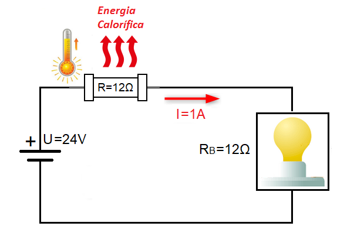
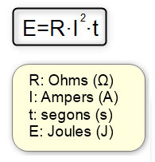
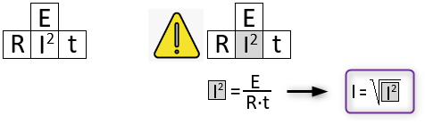

Efecte Joule

Si apropem la ma a una resistència elèctrica que forma part d'un circuit elèctric notarem que aquesta emet calor i si la toquem amb els dits ens podem cremar ja que la temperatura de la seua superfície pot arribar a ser molt elevada.
Aquest fenomen rep el nom d'Efecte Joule en honor al científic James Prescott Joule que va ser la primera persona que va estudiar amb detall la relació existent entre l'electricitat i la termodinàmica a l'any 1845. Segons James Prescott Joule la quantitat d'energia elèctrica que pot transformar en calor una resistència depèn dels següents factors:
-
El valor en Ohms de la Resistència Elèctrica (R): l'efecte Joule és directament proporcional al valor en Ohms de la Resistència.
-
La Intensitat de Corrent (I2): l'efecte és directament proporcional al quadrat de la intensitat de corrent.
-
El temps (t): l'efecte Joule és directament proporcional al temps de circulació del corrent elèctric.
L'expressió matemàtica que ens permet quantificar aquesta energia en Joules és la següent:

De la mateixa manera que vam fer amb la fórmula de l'energia podem utilitzar el "mètode 1-3" per esbrinar el valor d'una de les magnituds a partir de les altre tres.

James Prescott Joule va ser un del més notables físics anglesos del segle XIX, conegut sobretot per les seves investigacions en electricitat, termodinàmica i energia
El Joule és la unitat utilitzada en el sistema internacional per a mesurar l'energia, el treball i el calor. El seu símbol és la J, amb majúscula i sense punt.
Una caloria és la quantitat d'energia (calor) necessària per a produir un increment de temperatura d'1 °C en una mostra d'aigua amb una massa d'1 g des de 14,5 °C fins a 15,5°.